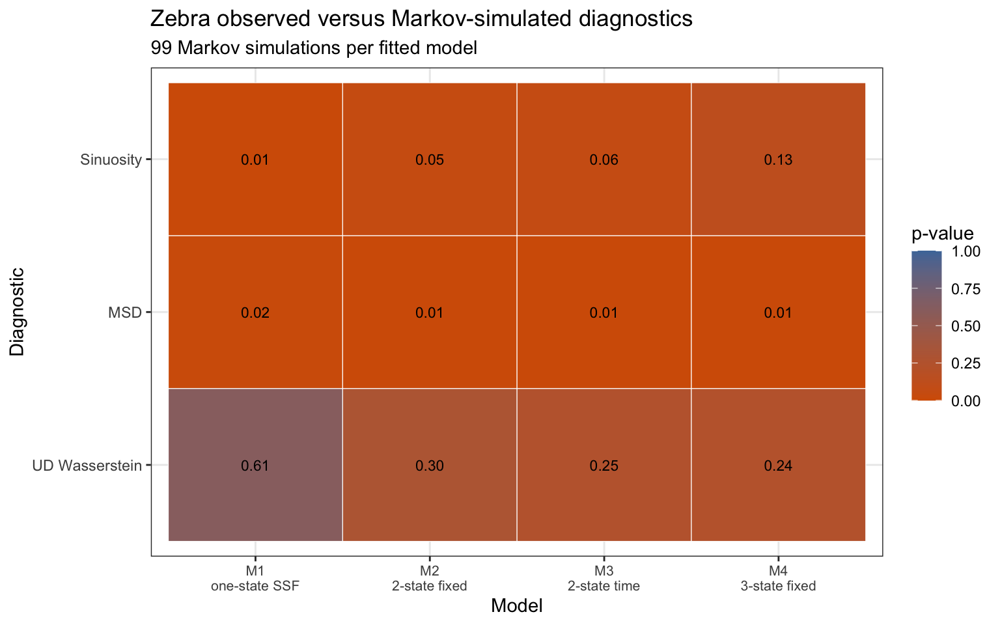
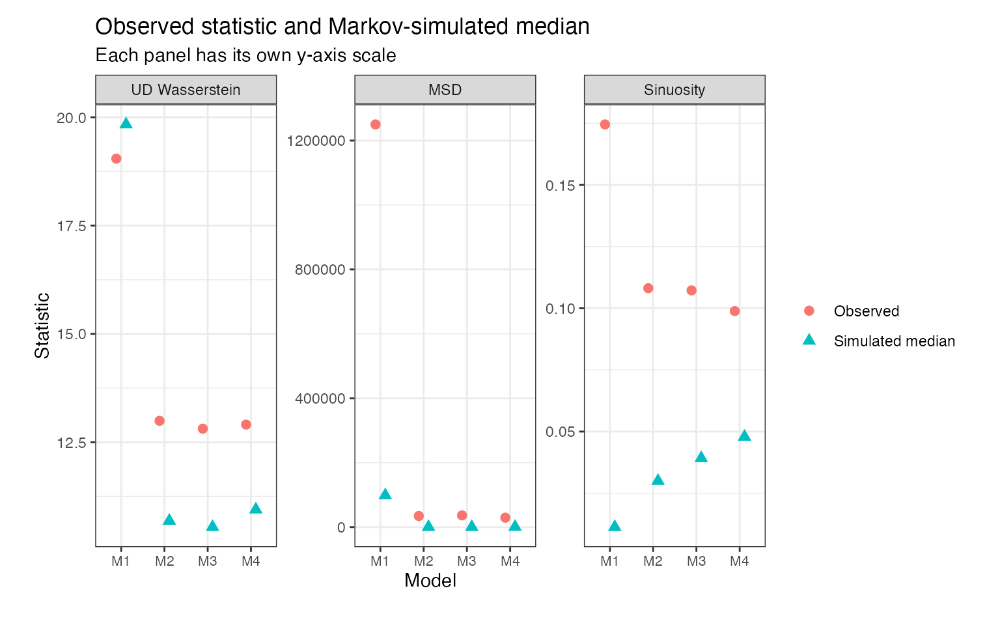

Zebra model comparison with Markov generation
Source:vignettes/zebra-model-comparison.Rmd
zebra-model-comparison.RmdThis article describes a zebra model-comparison workflow. The
simulation strategy is fixed to markov for every fitted
model. This means that each candidate model is evaluated through its
full generative process:
fitted transition model -> simulated latent states -> state-specific SSF stepsKeeping the generation strategy fixed makes the comparison about the fitted model structure, not about the latent-state conditioning strategy.
The four candidate models are:
| Label | States | Transition model | Interpretation |
|---|---|---|---|
M1_one_state |
1 | Degenerate | Single-state SSF baseline. |
M2_two_state_fixed |
2 | Constant transition matrix | Two movement states with no time-of-day transition effect. |
M3_two_state_time |
2 | Time-dependent transition matrix | Two states with transition probabilities depending on time of day. |
M4_three_state_fixed |
3 | Constant transition matrix | Three movement states with no time-of-day transition effect. |
The third model is the closest to the zebra HMM-SSF specification
used in the hmmSSF zebra example:
The first model is not a genuine HMM transition model. It is the one-state SSF case: the latent state is always 1, so state diagnostics such as switching rate and transition counts are mathematically trivial.
Embedded results
The tables and figures below are the embedded results from
data-raw/zebra_model_comparison_results.R. The run uses
Markov generation for all four candidate models.
library(ggplot2)
#> Warning: package 'ggplot2' was built under R version 4.5.2
find_zebra_result <- function(filename) {
installed_file <- system.file(
"extdata",
filename,
package = "HMMSSFGenerativeRepair"
)
if (nzchar(installed_file)) {
return(installed_file)
}
local_candidates <- file.path(
c("inst/extdata", "../inst/extdata"),
filename
)
local_candidates <- local_candidates[file.exists(local_candidates)]
if (length(local_candidates) > 0L) {
return(local_candidates[1L])
}
stop("Could not find embedded zebra result file: ", filename, call. = FALSE)
}
model_summary <- utils::read.csv(
find_zebra_result("zebra_model_comparison_model_summary.csv"),
stringsAsFactors = FALSE
)
global_diagnostics <- utils::read.csv(
find_zebra_result("zebra_model_comparison_global_diagnostics.csv"),
stringsAsFactors = FALSE
)
diagnostics <- utils::read.csv(
find_zebra_result("zebra_model_comparison_diagnostics.csv"),
stringsAsFactors = FALSE
)
model_levels <- model_summary$label
plot_model_labels <- c(
"M1 one-state SSF" = "M1\none-state SSF",
"M2 two-state fixed TPM" = "M2\n2-state fixed",
"M3 two-state time TPM" = "M3\n2-state time",
"M4 three-state fixed TPM" = "M4\n3-state fixed"
)
plot_model_short_labels <- c(
"M1 one-state SSF" = "M1",
"M2 two-state fixed TPM" = "M2",
"M3 two-state time TPM" = "M3",
"M4 three-state fixed TPM" = "M4"
)
diagnostic_labels <- c(
ud_wasserstein = "UD Wasserstein",
msd = "MSD",
sinuosity = "Sinuosity",
state_occupancy = "State occupancy",
state_residence_time = "Residence time",
state_conditioned_step_length = "Step length by state",
state_conditioned_turning_angle = "Turning angle by state",
state_conditioned_msd = "MSD by state"
)
global_diagnostics$model_label <- factor(
global_diagnostics$model_label,
levels = model_levels
)
global_diagnostics$diagnostic_label <- factor(
diagnostic_labels[global_diagnostics$diagnostic],
levels = diagnostic_labels[c("ud_wasserstein", "msd", "sinuosity")]
)
diagnostics$model_label <- factor(diagnostics$model_label, levels = model_levels)
diagnostics$diagnostic_label <- diagnostic_labels[diagnostics$diagnostic]The simulation settings used for the embedded comparison are:
simulation_settings <- unique(model_summary[
,
c("generation", "n_validate", "n_sims", "n_zeros", "rmax")
])
knitr::kable(simulation_settings)| generation | n_validate | n_sims | n_zeros | rmax |
|---|---|---|---|---|
| markov | 250 | 99 | 500 | 5 |
The model table reports the fitted model structure and the optimizer
status stored in the fitted objects. In this run, the multi-state
hmmSSF fits report optim code 1, so these
results should be read as a reproducible computational comparison from
these fitted objects, not as final publication-quality maximum
likelihood fits.
model_summary_display <- model_summary
model_summary_display$convergence_note <- ifelse(
is.na(model_summary_display$convergence),
"not applicable",
ifelse(
model_summary_display$convergence == 0,
"converged",
paste0("optim code ", model_summary_display$convergence)
)
)
knitr::kable(
model_summary_display[
,
c("model", "label", "n_states", "tpm", "convergence_note")
]
)| model | label | n_states | tpm | convergence_note |
|---|---|---|---|---|
| M1_one_state | M1 one-state SSF | 1 | ~1 | not applicable |
| M2_two_state_fixed | M2 two-state fixed TPM | 2 | ~1 | optim code 1 |
| M3_two_state_time | M3 two-state time TPM | 2 | ~cos(2 * pi * tod/24) + sin(2 * pi * tod/24) | optim code 1 |
| M4_three_state_fixed | M4 three-state fixed TPM | 3 | ~1 | optim code 1 |
The next table gives the trajectory-level diagnostics that are comparable across all four models. A larger Monte Carlo p-value means that the observed statistic is less extreme relative to the model-generated trajectories.
global_display <- global_diagnostics[
,
c(
"model_label",
"diagnostic_label",
"observed_statistic",
"simulated_median",
"simulated_q025",
"simulated_q975",
"p_value"
)
]
knitr::kable(
global_display,
digits = 3,
col.names = c(
"Model",
"Diagnostic",
"Observed",
"Simulated median",
"Simulated q025",
"Simulated q975",
"Monte Carlo p-value"
)
)| Model | Diagnostic | Observed | Simulated median | Simulated q025 | Simulated q975 | Monte Carlo p-value |
|---|---|---|---|---|---|---|
| M1 one-state SSF | UD Wasserstein | 19.044 | 19.834 | 15.820 | 27.424 | 0.61 |
| M1 one-state SSF | MSD | 1250090.092 | 98883.813 | 2362.011 | 1229663.216 | 0.02 |
| M1 one-state SSF | Sinuosity | 0.175 | 0.011 | 0.001 | 0.029 | 0.01 |
| M2 two-state fixed TPM | UD Wasserstein | 12.994 | 10.686 | 8.141 | 17.695 | 0.30 |
| M2 two-state fixed TPM | MSD | 34760.741 | 593.903 | 20.178 | 6668.183 | 0.01 |
| M2 two-state fixed TPM | Sinuosity | 0.108 | 0.030 | 0.001 | 0.127 | 0.05 |
| M3 two-state time TPM | UD Wasserstein | 12.812 | 10.543 | 7.979 | 17.908 | 0.25 |
| M3 two-state time TPM | MSD | 36595.804 | 525.113 | 18.705 | 6349.862 | 0.01 |
| M3 two-state time TPM | Sinuosity | 0.107 | 0.039 | 0.004 | 0.139 | 0.06 |
| M4 three-state fixed TPM | UD Wasserstein | 12.907 | 10.947 | 8.186 | 19.160 | 0.24 |
| M4 three-state fixed TPM | MSD | 29516.037 | 892.170 | 11.245 | 8245.370 | 0.01 |
| M4 three-state fixed TPM | Sinuosity | 0.099 | 0.048 | 0.004 | 0.132 | 0.13 |
ggplot(
global_diagnostics,
aes(x = model_label, y = diagnostic_label, fill = p_value)
) +
geom_tile(color = "white") +
geom_text(aes(label = sprintf("%.2f", p_value)), size = 3) +
scale_fill_gradient(
low = "#D55E00",
high = "#4C78A8",
limits = c(0, 1)
) +
scale_x_discrete(labels = plot_model_labels) +
theme_bw() +
theme(axis.text.x = element_text(size = 8)) +
labs(
x = "Model",
y = "Diagnostic",
fill = "p-value",
title = "Zebra observed versus Markov-simulated diagnostics",
subtitle = "99 Markov simulations per fitted model"
)
observed_simulated <- rbind(
data.frame(
model_label = global_diagnostics$model_label,
diagnostic_label = global_diagnostics$diagnostic_label,
source = "Observed",
value = global_diagnostics$observed_statistic
),
data.frame(
model_label = global_diagnostics$model_label,
diagnostic_label = global_diagnostics$diagnostic_label,
source = "Simulated median",
value = global_diagnostics$simulated_median
)
)
ggplot(
observed_simulated,
aes(x = model_label, y = value, color = source, shape = source)
) +
geom_point(
size = 2.4,
position = position_dodge(width = 0.45)
) +
facet_wrap(~ diagnostic_label, scales = "free_y") +
scale_x_discrete(labels = plot_model_short_labels) +
theme_bw() +
theme(
axis.text.x = element_text(size = 8),
plot.margin = margin(10, 20, 20, 20)
) +
labs(
x = "Model",
y = "Statistic",
color = NULL,
shape = NULL,
title = "Observed statistic and Markov-simulated median",
subtitle = "Each panel has its own y-axis scale"
)
The state diagnostics are mainly useful for the multi-state models. For the one-state baseline, the state process is degenerate and state diagnostics are shown only as a check that the one-state case is handled.
selected_state_diagnostics <- diagnostics[
!is.na(diagnostics$state) &
diagnostics$diagnostic %in% c(
"state_occupancy",
"state_residence_time",
"state_conditioned_step_length",
"state_conditioned_turning_angle",
"state_conditioned_msd"
),
,
drop = FALSE
]
selected_state_display <- selected_state_diagnostics[
,
c(
"model_label",
"diagnostic_label",
"state",
"observed_statistic",
"simulated_median",
"p_value",
"warning"
)
]
knitr::kable(
selected_state_display,
digits = 3,
col.names = c(
"Model",
"Diagnostic",
"State",
"Observed",
"Simulated median",
"Monte Carlo p-value",
"Warning"
)
)| Model | Diagnostic | State | Observed | Simulated median | Monte Carlo p-value | Warning | |
|---|---|---|---|---|---|---|---|
| 4 | M1 one-state SSF | State occupancy | 1 | 0.000 | 0.000 | 1.00 | |
| 6 | M1 one-state SSF | Residence time | 1 | 0.000 | 0.000 | 1.00 | Too few observed residence bouts; low power. |
| 9 | M1 one-state SSF | Step length by state | 1 | 2.071 | 0.127 | 0.01 | |
| 10 | M1 one-state SSF | Turning angle by state | 1 | 0.048 | 0.026 | 0.17 | |
| 11 | M1 one-state SSF | MSD by state | 1 | 21178.089 | 272.520 | 0.01 | |
| 15 | M2 two-state fixed TPM | State occupancy | 1 | 0.017 | 0.054 | 0.78 | |
| 16 | M2 two-state fixed TPM | State occupancy | 2 | 0.017 | 0.054 | 0.78 | |
| 18 | M2 two-state fixed TPM | Residence time | 1 | 8.272 | 2.260 | 0.01 | |
| 19 | M2 two-state fixed TPM | Residence time | 2 | 4.532 | 1.331 | 0.01 | |
| 22 | M2 two-state fixed TPM | Step length by state | 1 | 0.158 | 0.015 | 0.01 | |
| 23 | M2 two-state fixed TPM | Step length by state | 2 | 0.088 | 0.067 | 0.13 | |
| 24 | M2 two-state fixed TPM | Turning angle by state | 1 | 0.033 | 0.029 | 0.40 | |
| 25 | M2 two-state fixed TPM | Turning angle by state | 2 | 0.039 | 0.035 | 0.47 | |
| 26 | M2 two-state fixed TPM | MSD by state | 1 | 896.057 | 19.363 | 0.01 | |
| 27 | M2 two-state fixed TPM | MSD by state | 2 | 225.558 | 10.995 | 0.03 | |
| 31 | M3 two-state time TPM | State occupancy | 1 | 0.065 | 0.044 | 0.33 | |
| 32 | M3 two-state time TPM | State occupancy | 2 | 0.065 | 0.044 | 0.33 | |
| 34 | M3 two-state time TPM | Residence time | 1 | 6.648 | 5.252 | 0.21 | |
| 35 | M3 two-state time TPM | Residence time | 2 | 3.120 | 1.551 | 0.03 | |
| 38 | M3 two-state time TPM | Step length by state | 1 | 0.167 | 0.016 | 0.01 | |
| 39 | M3 two-state time TPM | Step length by state | 2 | 0.111 | 0.088 | 0.14 | |
| 40 | M3 two-state time TPM | Turning angle by state | 1 | 0.008 | 0.023 | 0.87 | |
| 41 | M3 two-state time TPM | Turning angle by state | 2 | 0.057 | 0.045 | 0.42 | |
| 42 | M3 two-state time TPM | MSD by state | 1 | 726.265 | 7.431 | 0.01 | |
| 43 | M3 two-state time TPM | MSD by state | 2 | 322.087 | 25.719 | 0.05 | |
| 47 | M4 three-state fixed TPM | State occupancy | 1 | 0.015 | 0.033 | 0.78 | |
| 48 | M4 three-state fixed TPM | State occupancy | 2 | 0.021 | 0.013 | 0.37 | |
| 49 | M4 three-state fixed TPM | State occupancy | 3 | 0.006 | 0.034 | 0.95 | |
| 51 | M4 three-state fixed TPM | Residence time | 1 | 6.738 | 1.887 | 0.01 | |
| 52 | M4 three-state fixed TPM | Residence time | 2 | 0.486 | 0.341 | 0.12 | |
| 53 | M4 three-state fixed TPM | Residence time | 3 | 1.426 | 0.488 | 0.01 | |
| 56 | M4 three-state fixed TPM | Step length by state | 1 | 0.160 | 0.015 | 0.01 | |
| 57 | M4 three-state fixed TPM | Step length by state | 2 | 0.334 | 0.268 | 0.24 | |
| 58 | M4 three-state fixed TPM | Step length by state | 3 | 0.085 | 0.057 | 0.07 | |
| 59 | M4 three-state fixed TPM | Turning angle by state | 1 | 0.004 | 0.030 | 0.92 | |
| 60 | M4 three-state fixed TPM | Turning angle by state | 2 | 0.001 | 0.030 | 0.98 | |
| 61 | M4 three-state fixed TPM | Turning angle by state | 3 | 0.064 | 0.038 | 0.29 | |
| 62 | M4 three-state fixed TPM | MSD by state | 1 | 620.567 | 16.220 | 0.02 | |
| 63 | M4 three-state fixed TPM | MSD by state | 2 | NA | NA | NA | Too few state-specific points; low power. |
| 64 | M4 three-state fixed TPM | MSD by state | 3 | 636.570 | 55.332 | 0.04 |
In this embedded run, no candidate model reproduces every global diagnostic. The UD Wasserstein p-values are not extreme, but MSD remains extreme for every model. The three-state fixed model gives the largest p-value for sinuosity in this run, while the two-state time-dependent model is closest to the original zebra transition specification. Because the multi-state optimizers report code 1, the comparison should be treated as an executable demonstration and a diagnostic screen rather than as a final model-selection result.
Data preparation
The code below assumes that the local hmmSSF repository
is available and that the zebra example files can be read from
inst/zebra and inst/functions. These chunks
are not evaluated automatically because fitting the four models and
simulating trajectories is computationally expensive.
library(HMMSSFGenerativeRepair)
library(hmmSSF)
library(raster)
library(ggplot2)
library(survival)
root_dir <- "/Users/aureliennicosia/Documents/validHmmSSF"
hmmssf_repo <- file.path(root_dir, "hmmSSF")
out_dir <- file.path(root_dir, "zebra_validation")
dir.create(out_dir, showWarnings = FALSE, recursive = TRUE)
source(file.path(hmmssf_repo, "inst/functions/cov_df.R"))
source(file.path(hmmssf_repo, "inst/functions/simHMMSSF.R"))
set.seed(250)
zebra_processed <- readRDS(file.path(
hmmssf_repo,
"inst/zebra/zebra_processed.RData"
))
track_raw <- subset(zebra_processed, obs == 1)
track_for_controls <- track_raw[, c("ID", "x", "y", "time")]
habitat <- raster::raster(file.path(
hmmssf_repo,
"inst/zebra/vegetation2.grd"
))
model_data_file <- file.path(out_dir, "zebra_model_data.rds")
if (file.exists(model_data_file)) {
model_data <- readRDS(model_data_file)
} else {
model_data <- hmmSSF::get_controls(
obs = track_for_controls,
n_controls = 25,
distr = "gamma"
)
not_na_xy <- which(!is.na(model_data$x) & !is.na(model_data$y))
model_data$veg[not_na_xy] <- raster::extract(
habitat,
model_data[not_na_xy, c("x", "y")],
method = "simple"
)
model_data$veg <- factor(model_data$veg)
levels(model_data$veg) <- c(
"grassland",
"bushed grassland",
"bushland",
"woodland"
)
model_data$tod <- as.numeric(format(model_data$time, "%H")) +
as.numeric(format(model_data$time, "%M")) / 60
zero_step <- which(!is.na(model_data$step) & model_data$step == 0)
positive_step <- model_data$step[
!is.na(model_data$step) & model_data$step > 0
]
if (length(zero_step) > 0L) {
model_data$step[zero_step] <- model_data$step[zero_step] +
stats::runif(length(zero_step), 0, min(positive_step))
}
saveRDS(model_data, model_data_file)
}
observed_full <- subset(model_data, obs == 1)
complete_observed_index <- which(
is.finite(observed_full$x) & is.finite(observed_full$y)
)
n_validate <- 250
validation_index <- complete_observed_index[seq_len(n_validate)]
observed_validate <- observed_full[
validation_index,
c("x", "y", "time", "tod")
]
observed_track <- data.frame(
x = observed_validate$x,
y = observed_validate$y
)
ssf_formula <- ~ step + log(step) + cos(angle) + veg
tpm_fixed <- ~ 1
tpm_time <- ~ cos(2 * pi * tod / 24) + sin(2 * pi * tod / 24)Starting values
The zebra example already contains starting values for the two-state model. For the fixed-transition models, only transition intercepts are used. For the three-state model, the third state is initialized as a small perturbation of the two-state SSF coefficients.
initial_par_raw <- readRDS(file.path(
hmmssf_repo,
"inst/zebra/initial_par.RData"
))[[3]]
make_three_state_betas <- function(two_state_betas) {
beta_jitter <- seq(-0.05, 0.05, length.out = nrow(two_state_betas))
cbind(
two_state_betas,
rowMeans(two_state_betas) + beta_jitter
)
}
make_tpm_start <- function(n_states, tpm_formula, observed_data, raw_alphas) {
tpm_mm <- stats::model.matrix(tpm_formula, observed_data)
n_tpm_cov <- ncol(tpm_mm)
n_cols <- n_states * (n_states - 1L)
out <- matrix(0, nrow = n_tpm_cov, ncol = n_cols)
if (n_states == 2L && n_tpm_cov == nrow(raw_alphas)) {
out[, ] <- raw_alphas
} else if (n_states == 2L && n_tpm_cov == 1L) {
out[1L, ] <- raw_alphas[1L, ]
} else if (n_states == 3L && n_tpm_cov == 1L) {
out[1L, 1L] <- raw_alphas[1L, 1L]
out[1L, 3L] <- raw_alphas[1L, 2L]
}
out
}Fitting the four models
hmmSSF::hmmSSF() is used for the multi-state HMM-SSF
models. The one-state model is fitted with
survival::clogit() because it is a standard conditional
logistic SSF with a degenerate latent state.
fit_one_state_ssf <- function(data, ssf_formula) {
formula <- stats::as.formula(
paste0("obs ~ ", deparse(ssf_formula[[2L]]), " + strata(stratum)")
)
fit <- survival::clogit(formula, data = data)
betas <- matrix(stats::coef(fit), ncol = 1)
rownames(betas) <- names(stats::coef(fit))
colnames(betas) <- "S1"
list(
par = list(
ssf = betas,
tpm = matrix(numeric(0), nrow = 1, ncol = 0)
),
fit = fit,
args = list(
ssf_formula = ssf_formula,
tpm_formula = ~ 1,
data = data,
n_states = 1L
)
)
}
fit_hmmssf_model <- function(
n_states,
tpm_formula,
ssf_par0,
tpm_par0,
data,
maxit = 2000
) {
hmmSSF::hmmSSF(
ssf_formula = ssf_formula,
tpm_formula = tpm_formula,
data = data,
ssf_par0 = ssf_par0,
tpm_par0 = tpm_par0,
n_states = n_states,
optim_opts = list(trace = 0, maxit = maxit)
)
}
model_specs <- list(
M1_one_state = list(
n_states = 1L,
tpm_formula = ~ 1,
fit_type = "one_state_ssf"
),
M2_two_state_fixed = list(
n_states = 2L,
tpm_formula = tpm_fixed,
fit_type = "hmmssf",
ssf_par0 = initial_par_raw$betas,
tpm_par0 = make_tpm_start(2, tpm_fixed, observed_validate, initial_par_raw$alphas)
),
M3_two_state_time = list(
n_states = 2L,
tpm_formula = tpm_time,
fit_type = "hmmssf",
ssf_par0 = initial_par_raw$betas,
tpm_par0 = make_tpm_start(2, tpm_time, observed_validate, initial_par_raw$alphas)
),
M4_three_state_fixed = list(
n_states = 3L,
tpm_formula = tpm_fixed,
fit_type = "hmmssf",
ssf_par0 = make_three_state_betas(initial_par_raw$betas),
tpm_par0 = make_tpm_start(3, tpm_fixed, observed_validate, initial_par_raw$alphas)
)
)
fits <- lapply(names(model_specs), function(model_name) {
spec <- model_specs[[model_name]]
message("Fitting ", model_name)
if (identical(spec$fit_type, "one_state_ssf")) {
fit_one_state_ssf(model_data, ssf_formula)
} else {
fit_hmmssf_model(
n_states = spec$n_states,
tpm_formula = spec$tpm_formula,
ssf_par0 = spec$ssf_par0,
tpm_par0 = spec$tpm_par0,
data = model_data
)
}
})
names(fits) <- names(model_specs)Markov simulation for every model
The simulation strategy is fixed to Markov generation. For the one-state model, this simply means that every simulated state is 1.
n_sims <- 99
n_zeros <- 500
rmax <- 5
ssf_cov <- list(veg = habitat)
levels_cov <- list(veg = levels(model_data$veg))
y1 <- as.numeric(observed_validate[1L, c("x", "y")])
simulate_markov_trajectories <- function(model_name, fit, spec) {
fit_par <- list(
betas = fit$par$ssf,
alphas = fit$par$tpm
)
tracks_with_states <- lapply(seq_len(n_sims), function(sim_id) {
simHMMSSF(
ssf_formula = ssf_formula,
tpm_formula = spec$tpm_formula,
ssf_cov = ssf_cov,
tpm_cov = observed_validate,
par = fit_par,
n_states = spec$n_states,
n_obs = n_validate,
n_zeros = n_zeros,
y1 = y1,
rmax = rmax,
levels_cov = levels_cov,
print = FALSE
)
})
simulated_tracks <- lapply(tracks_with_states, function(track) {
data.frame(x = track$x, y = track$y)
})
names(simulated_tracks) <- paste0("sim_", seq_len(n_sims))
simulated_states <- do.call(
rbind,
lapply(tracks_with_states, function(track) as.integer(track$state))
)
list(
simulated_tracks = simulated_tracks,
simulated_states = simulated_states
)
}
simulations <- lapply(names(fits), function(model_name) {
message("Simulating ", model_name)
simulate_markov_trajectories(
model_name = model_name,
fit = fits[[model_name]],
spec = model_specs[[model_name]]
)
})
names(simulations) <- names(fits)Generative diagnostics
The wrapper diagnose_hmmssf_simulations() is used here
because trajectories have already been simulated with the zebra-specific
simulator.
diagnostic_names <- c(
"ud_wasserstein",
"msd",
"sinuosity",
"state_occupancy",
"state_residence_time",
"switching_rate",
"transition_counts",
"state_conditioned_step_length",
"state_conditioned_turning_angle",
"state_conditioned_msd"
)
get_observed_states <- function(model_name, fit, spec) {
if (spec$n_states == 1L) {
rep(1L, nrow(observed_track))
} else {
hmmSSF::viterbi_decoding(fit)[validation_index]
}
}
diagnoses <- lapply(names(fits), function(model_name) {
spec <- model_specs[[model_name]]
sim <- simulations[[model_name]]
diagnose_hmmssf_simulations(
observed_track = observed_track,
simulated_tracks = sim$simulated_tracks,
observed_states = get_observed_states(model_name, fits[[model_name]], spec),
simulated_states = sim$simulated_states,
label = model_name,
diagnostics = diagnostic_names,
metadata = list(
generation = "markov",
n_states = spec$n_states,
tpm_formula = deparse(spec$tpm_formula)
)
)
})
names(diagnoses) <- names(fits)
comparison_table <- do.call(
rbind,
lapply(names(diagnoses), function(model_name) {
out <- summary(diagnoses[[model_name]])
out$model <- model_name
out
})
)Comparing models
The primary comparison is made on the same trajectory-level diagnostics for all models. State diagnostics are useful for multi-state models, but they are trivial for the one-state baseline.
global_comparison <- comparison_table[
is.na(comparison_table$state) &
comparison_table$diagnostic %in%
c("ud_wasserstein", "msd", "sinuosity"),
c("model", "diagnostic", "observed_statistic", "simulated_median", "p_value")
]
global_comparison
ggplot(
global_comparison,
aes(x = model, y = diagnostic, fill = p_value)
) +
geom_tile(color = "white") +
geom_text(aes(label = sprintf("%.2f", p_value)), size = 3) +
scale_fill_gradient(
low = "#D55E00",
high = "#4C78A8",
limits = c(0, 1)
) +
theme_bw() +
theme(axis.text.x = element_text(angle = 30, hjust = 1)) +
labs(
x = "Model",
y = "Diagnostic",
fill = "p-value",
title = "Zebra Markov-generative model comparison"
)For each model, the full dashboard can also be drawn:
Interpretation
This workflow answers a targeted question:
If every candidate model is simulated with its own Markov generative process,
which model best reproduces the observed zebra trajectory diagnostics?The comparison is not based on likelihood alone. It asks whether each fitted model can generate trajectories that reproduce emergent movement features such as space use, displacement over lag, and path straightness.
For the one-state baseline, only trajectory-level diagnostics should be used for substantive interpretation. For the multi-state models, state occupancy, residence time, switching rate, transition counts, and state-conditioned movement diagnostics help identify why a model succeeds or fails.
The two-state time-dependent model is expected to be the closest to the original zebra HMM-SSF specification because its transition probabilities vary with time of day. The fixed-transition models test whether this temporal transition structure is necessary for generative realism.